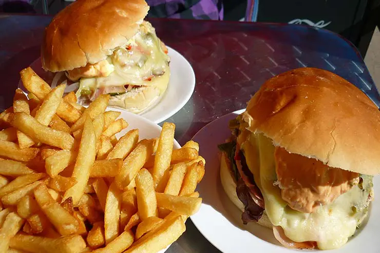
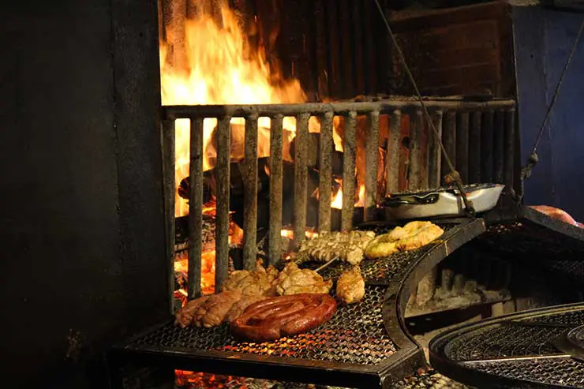
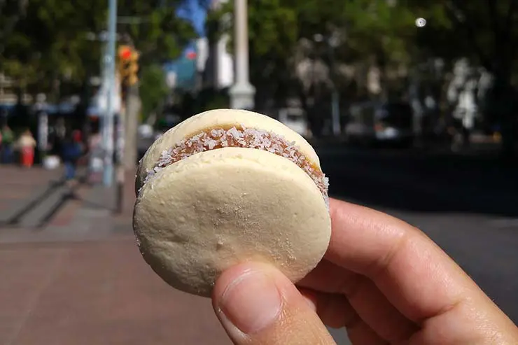

Esse sanduíche é um ícone do país e está pros uruguaios como o Xis está pros Gaúchos. O chivito é fácil de encontrar em praticamente qualquer esquina e, digamos, leva tudo o que couber dentro. Ou seja, é bem grande e dá pra dividir.

Outra grande estrela dentro as comidas típicas do Uruguai, o asado (ou parrilla) é um tradicional churrasco uruguaio. As carnes dessa região costumam ser sempre de boa qualidade e o famoso assado é feito em uma grelha inclinada sobre a lenha.

Você deve ter pensado que alfajor era argentino, certo? Na realidade o doce é uma herança da colonização europeia nos dois países e no Uruguai ele também é a sobremesa mais famosa.